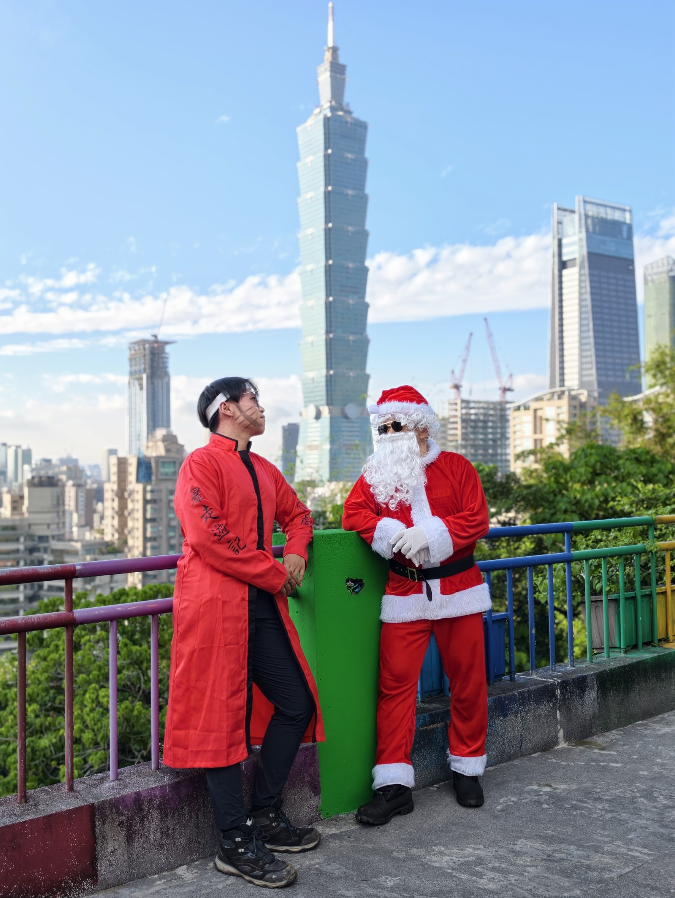

新手入門
象山｜台北城市中的自然步道

象山位於台北市信義區，是台北著名的親山步道。沿途可欣賞台北101及城市天際線，尤其在日落時分，景色十分迷人。
登山路線特色
- 地點：台北市信義區
- 難度：新手入門，但有連續階梯
- 景觀：台北101、六巨石、城市夜景
- 特色：交通便利，適合短時間登山健行
登山注意事項
建議穿著止滑且合腳的鞋子，攜帶飲水。雨後石階可能濕滑，夏季則需注意高溫與補水。
走進山林，看見更遼闊的自己

象山位於台北市信義區，是台北著名的親山步道。沿途可欣賞台北101及城市天際線，尤其在日落時分，景色十分迷人。
建議穿著止滑且合腳的鞋子，攜帶飲水。雨後石階可能濕滑，夏季則需注意高溫與補水。